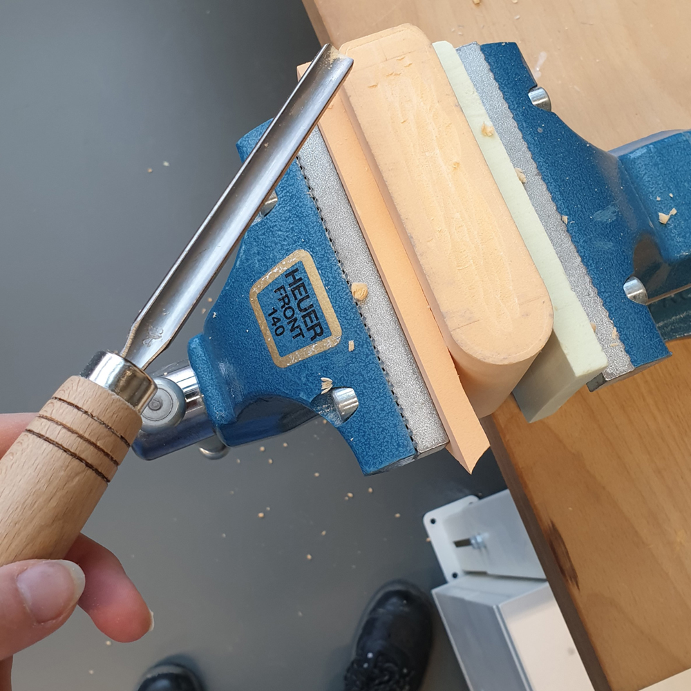
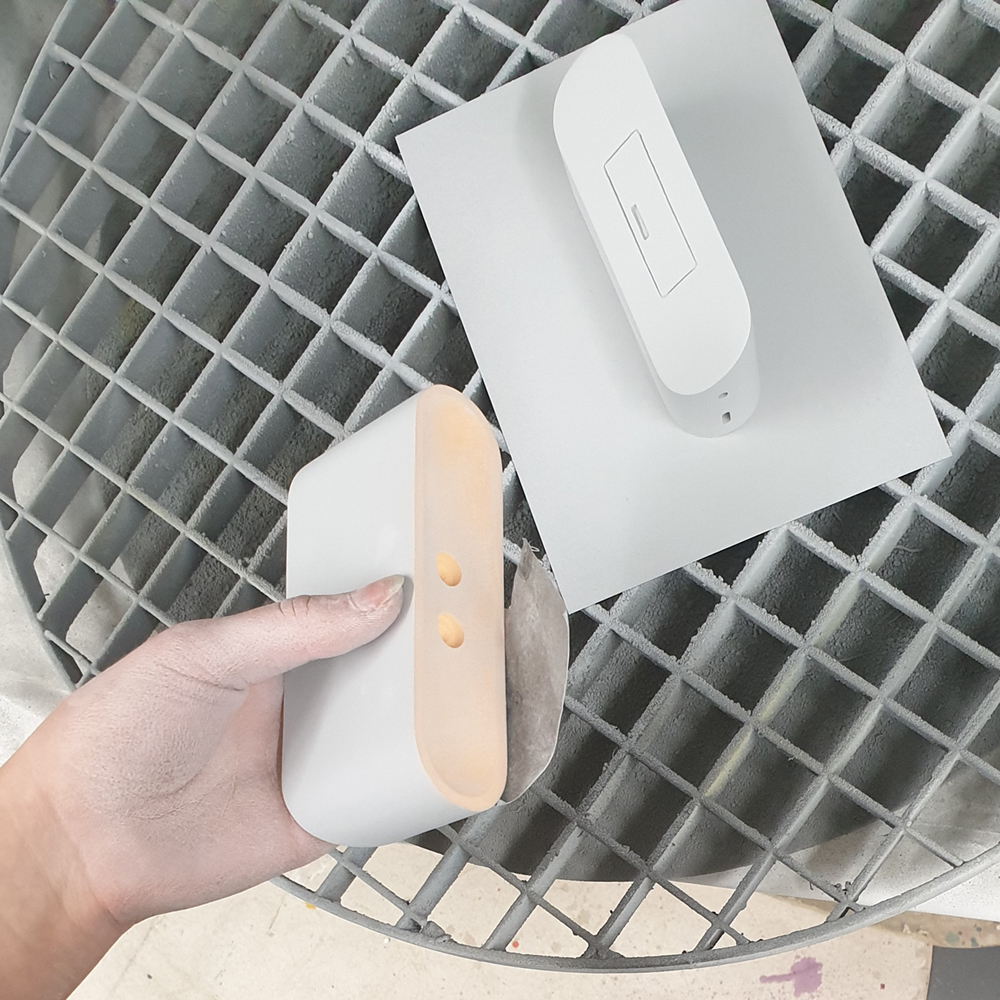
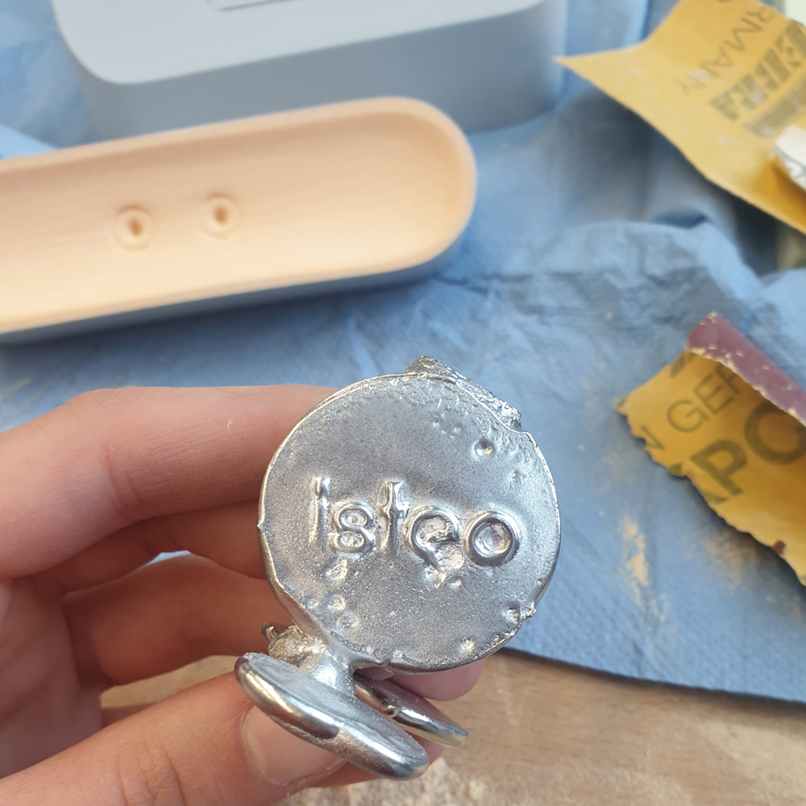
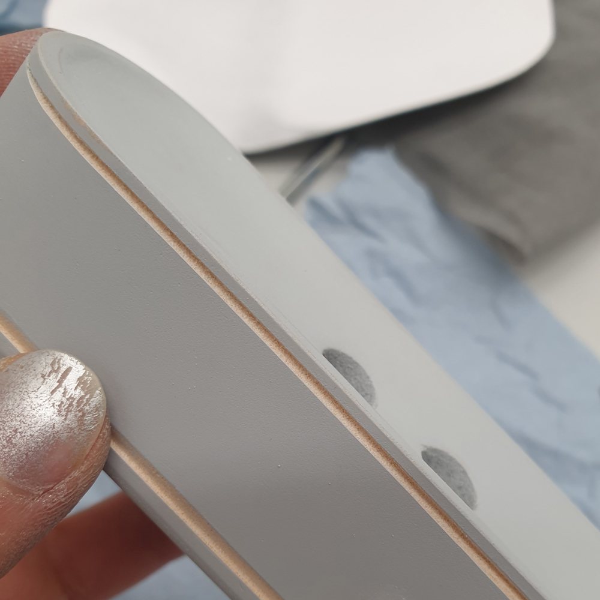

TWINOLA

Fusion 360 & Unity Animation
In the third semester of the study, a pocket radio should be designed and built as a photo model. The requirements here were four buttons, which must not all be together, a molded knob and a battery compartment for two AA batteries. The special feature of this radio is that it can be taken apart. This allows the two individual speakers to be placed in different locations for better sound. Both individual parts look similar, therefore the name "Twinola". In addition, the radio was recreated in Fusion 360 and animated in Unity. Here is a demonstration of what is possible with this radio.
Design process
   